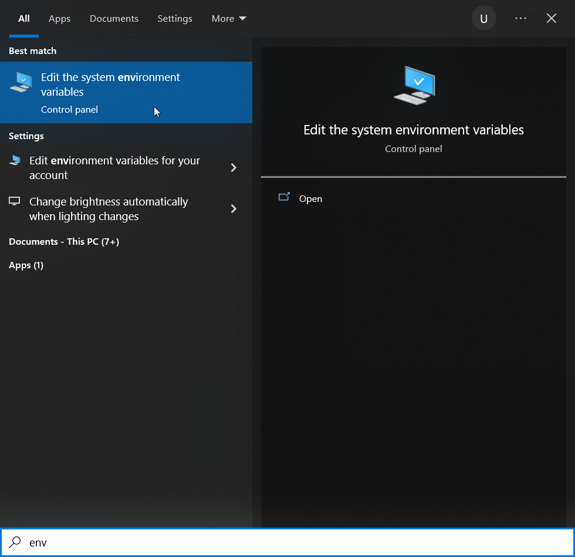
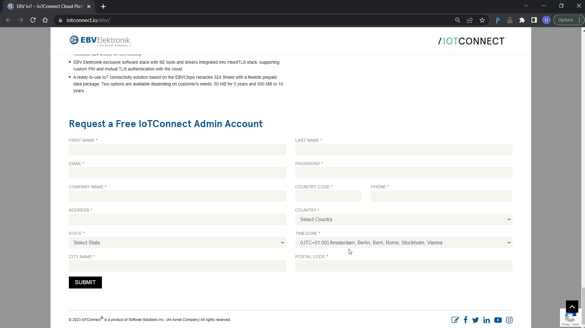
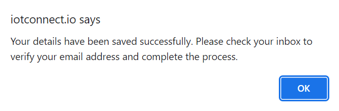

EBV-IoT - Infineon & Avnet IoTConnect Secure Cloud connected solution -
Training manual
Prerequisites
Following please find hardware and software prerequisites.
Hardware prerequisites
 |
Important: To run the complete workshop hands on part a computer with admin/root rights should be used. Windows OS is preferred, while for Linux should be able to run as well. |
|---|
Following evaluation hardware is going to be used during the training:
- The PSoC™ 62S2 Wi-Fi BT Pioneer Kit (CY8CKIT-062S2-43012)
- EBV-IoT – Infineon PAS CO2 Evaluation Shield
- EBV-IoT – Infineon OPTIGA Trust M Evaluation Shield
- 128x128 pixels OLED display (optional)
The PSoC™ 62S2 Wi-Fi BT Pioneer Kit (CY8CKIT-062S2-43012)
EBV-IoT – Infineon PAS CO2 Evaluation Shield

EBV-IoT – Infineon OPTIGA Trust M Evaluation Shield
The stacked bundle:

Software prerequisites
Installing ModusToolbox™
Please refer to the Infineon’s ModusToolbox™ Software pages for application download and “Installation guide” (link).
 |
Note: It is strongly recommended to install the tool into the root of any of your disk drives e.g. “D:/Infineon”. Please do keep the name as short as possible and do not use spaces or any special characters. |
|---|
Default location of installation directory for the Eclipse IDE is:
<install_path>\ModusToolbox\ide_<version>\eclipse\
|
Important: If the software is installed in any other than default location you have to set an environment variable. Please follow the ModusToolbox installation guide. |
|---|
To check for ModusToolBox environmental variable setting, under Windows Start menu or Windows search type in “env”… . The Edit the system variables should soon be listed on top as shown on Figure bellow.
Now click on Environmental Variables...
and look for “System Variable” CY_TOOLS_PATHS.

Please proceed accordingly:
- If the variable does not exist, then in “Environment Variables” window click New, then in new pop-up window “New System Variable” at “Variable name” type CY_TOOLS_PATHS and at “Variable value” put your ModusToolBox path or browse using Browse Directory. Then click OK as well as click OK in “Environment Variables” window.
- If the variable exists, then in “Environment Variables” window click Edit, then in new pop-up window “Edit System Variable” check if “Variable name” type CY_TOOLS_PATHS and “Variable value” matches to your ModusToolBox path or browse using Browse Directory. Then click OK as well as click OK in “Environment Variables” window.
|
Important: Very important – use forward slashes. / - ok; \ - not ok |
|---|
After successful installation you should be able to see the tools installed in your start menu under “ModusToolbox 3.1 (Current user)”.
If clicked on Eclipse IDE for ModusToolBox 3.1 you will see a “Launcher“ window popping out.
 |
Task accomplished: If you can run “Eclipse IDE for ModusToolbox™ Launcher” and a workspace selection window is opening, you are good to proceed to a next step. |
|---|
Running “modus-shell”
The easiest way of running “modus-shell” is to look for it under Windows search by typing in “modus”…. The application should soon be listed on top as shown on figure bellow. Click on the “App” to run the application.
Next step is to check whether “optigatrust” Python module is installed. Type “optigatrust.exe” into the terminal. If your replay is “bash: optigatrust.exe: command not found”, please proceed to Sub-section Installing “optigatrust” Python module otherwise proceed to Sub-section Installing other Python modules.
 ~ ~ |
|---|
|
user@computer_name
~ $ optigatrust.exe bash: optigatrust.exe: command not found user@computer_name ~ $ |
Installing “optigatrust” Python module
Please install the “optigatrust” Python module by executing “pip install optigatrust”. Installation is successful if “Successfully installed…” message appears.
| ~ |
|---|
|
user@computer_name $ pip install optigatrust Collecting optigatrust Downloading optigatrust-1.3.7-py3-none-any.whl (493 kB) |████████████████████████████████| 493 kB 2.2 MB/s Requirement already satisfied: cryptography in d:\infineon\modustoolbox\tools_3.0\python\lib\site-packages (from optigatrust) (36.0.1) Requirement already satisfied: click in d:\infineon\modustoolbox\tools_3.0\python\lib\site-packages (from optigatrust) (8.0.4) Collecting jinja2 Downloading Jinja2-3.1.2-py3-none-any.whl (133 kB) |████████████████████████████████| 133 kB 6.8 MB/s Collecting pyserial Using cached pyserial-3.5-py2.py3-none-any.whl (90 kB) Collecting asn1crypto Downloading asn1crypto-1.5.1-py2.py3-none-any.whl (105 kB) |████████████████████████████████| 105 kB 6.4 MB/s Requirement already satisfied: colorama in d:\infineon\modustoolbox\tools_3.0\python\lib\site-packages (from click->optigatrust) (0.4.5) Requirement already satisfied: cffi>=1.12 in d:\infineon\modustoolbox\tools_3.0\python\lib\site-packages (from cryptography->optigatrust) (1.15.1) Requirement already satisfied: pycparser in d:\infineon\modustoolbox\tools_3.0\python\lib\site-packages (from cffi>=1.12->cryptography->optigatrust) (2.21) Collecting MarkupSafe>=2.0 Downloading MarkupSafe-2.1.2-cp38-cp38-win_amd64.whl (16 kB) Installing collected packages: MarkupSafe, pyserial, jinja2, asn1crypto, optigatrust Successfully installed MarkupSafe-2.1.2 asn1crypto-1.5.1 jinja2-3.1.2 optigatrust-1.3.7 pyserial-3.5 WARNING: You are using pip version 21.1.3; however, version 23.0.1 is available. You should consider upgrading via the ‘D:\Infineon\ModusToolbox\tools_3.0\python\python.exe -m pip install –upgrade pip’ command. user@computer_name ~ $ |
| ~ |
|---|
|
user@computer_name $ optigatrust.exe Usage: optigatrust [OPTIONS] COMMAND [ARGS]... Options: --version Show the version and exit. --help Show this message and exit. Commands: create-keys Generate a keypair object Manages objects data and metadata update Use protected update feature update-wizard Guide through the protected update preparation for a... user@computer_name ~ $ |
Installing other Python modules
To run all the steps related to secure element interfacing using Python scripts, we need to add OpenSSL, QRcode and image related modules. Please install the modules using following commands:
| ~ |
|---|
|
user@computer_name $ pip list Package Version ------------------- ------------ appdirs 1.4.4 . openssl-python 0.1.1 optigatrust 1.3.7 Pillow 9.5.0 . pyOpenSSL 23.1.1 . qrcode 7.4.2 WARNING: You are using pip version 21.1.3; however, version 23.1.2 is available. You should consider upgrading via the 'D:\Infineon\ModusToolbox\tools_3.0\python\python.exe -m pip install --upgrade pip' command. user@computer_name ~ $ |
|
Task accomplished: If your “pip list” is listing “optigatrust”, “pyopenssl”, “pillow”, and “qrcode” you are fulfilling Python related requirements. |
|---|
Create IoTConnect cloud account
As a first step in every cloud platform it is to create your cloud access account. Use your favourite browser to access EBV IoTConnect website at https://iotconnect.io/ebv and click Request a Free IoTConnect Account:
Enter your details and make sure your email address is valid then click Submit button:
 |
Important: Password must contain at least 1 upper case and special character. |
|---|
If the provided information is correct, a confirmation popup invites you to check your emails for an email with a link to validate your email address. Press OK button: Usually, the browser returns you to the beginning of the page.
Please check your mailbox. You should be receiving email with a verification. Click on Verify Email Now.
The webpage loads again and process the creation of your account in the background. Once complete, below popup should open to confirm your IoTConnect account has been created successfully. Click OK button:
Please check your mailbox. You should now get confirmation email with a link to the cloud platform.
Login to the cloud using email and password you provided during registration process.
If it happens you forgot your password, you can reset the password by clicking Forgot Password? at login page.
Reset your password by providing new one and confirmation of the same password and click Submit.
|
Important: Password must contain at least 1 upper case and special character. |
|---|
You should be now seeing “Welcome back” page.
After a successful login, the IoTConnect backend will land to the Dashboard page showing information related to device activities (device to cloud messages, command, twin properties, rule, notification, events, etc) and the current subscription plan:
|
Task accomplished: Congratulations, you have just created your free Avnet IoTConnect cloud account. Save your IoTConnect login credentials securely for your next use. |
|---|